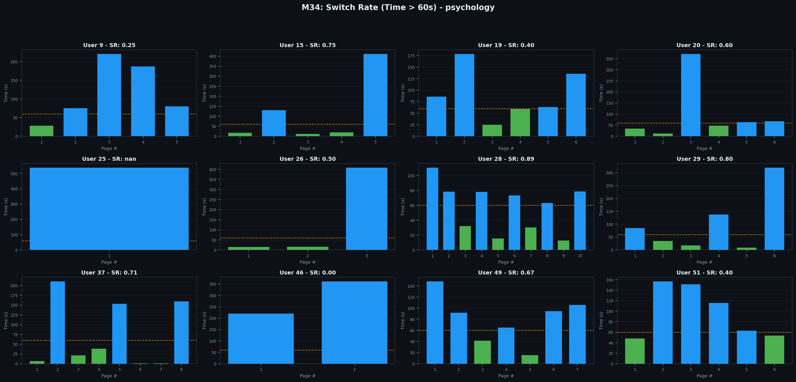
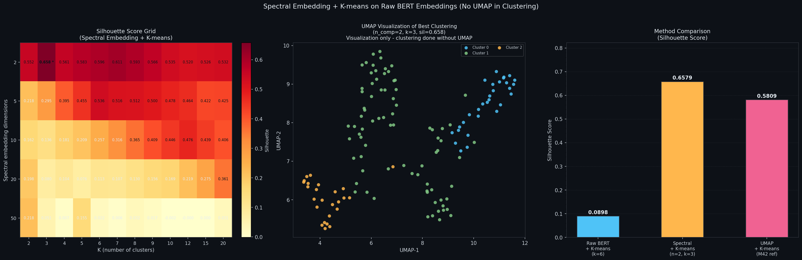
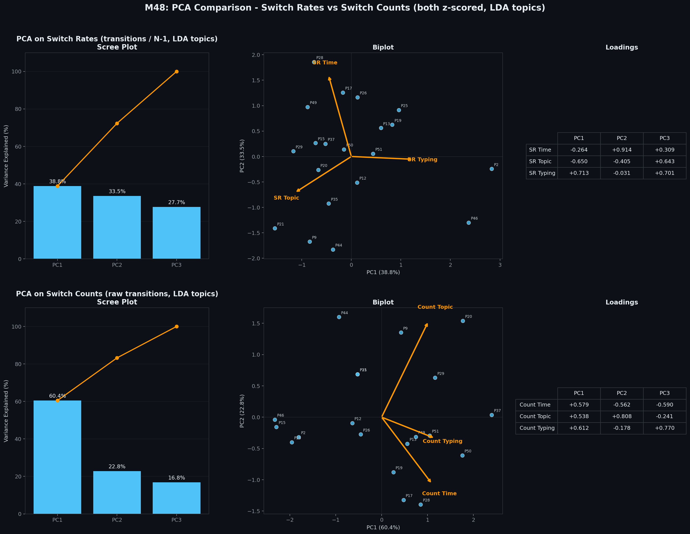

המטרה: לבנות ציון מורכב אחד לכל משתתף שמסכם כמה הוא עובר בין מצבי Explore ו-Exploit במהלך הגלישה בוויקיפדיה. ציון זה ישמש כמשתנה התלוי (DV) בהשוואה בין תנאים ניסויים.
הגדרנו שלוש שיטות מדידה עצמאיות. לכל משתתף ולכל שאלה, סופרים כמה פעמים הוא עבר בין מצבי Explore ו-Exploit:
דף עם שהייה מעל 60 שניות = Exploit. שהייה מתחת ל-60 שניות = Explore. סופרים מעברים בין המצבים.
מודל LDA (10 נושאים) מקצה נושא דומיננטי לכל מאמר. מעבר לנושא אחר = switching. נבחר LDA על פני BERTopic (ראו הסבר למטה).
דף עם burst הקלדה או Paste = Exploit. דף ללא פעילות כתיבה = Explore. סופרים מעברים.

ניסינו מספר שיטות clustering מבוססות BERT embeddings לייצוג טופיקים:
מה זה BERT Embeddings? מודל שפה (sentence-transformers) שקורא את הטקסט של כל מאמר ומייצר וקטור של 384 מספרים. מאמרים דומים בתוכן מקבלים וקטורים קרובים.
מה זה K-means? אלגוריתם שמחלק N נקודות ל-k קבוצות: בוחר מרכזים, מחבר כל נקודה למרכז הקרוב, מזיז מרכזים לממוצע, וחוזר עד שמתייצב.
מה זה Silhouette Score? מודד כמה טוב כל נקודה "שייכת" לקלאסטר שלה. ציון קרוב ל-1 = שיוך מצוין, קרוב ל-0 = לא ברור, שלילי = שובצה לא נכון.
| סקריפט | שיטה | קלאסטרים | תוצאה |
|---|---|---|---|
| M35 | BERTopic (HDBSCAN) | 4 | גס מדי - כל מאמרי הכלכלה באותו cluster. Switch rate כמעט 0. |
| M42/M43 | BERT + UMAP + K-means | 5 | silhouette=0.58, אך UMAP מעוות מרחקים (ראו הסבר). |
| M44 | BERT + UMAP + DBSCAN | 7 | Switch rates נמוכים ברוב הדומיינים. |
| M45 | BERT + UMAP + Spectral + K-means | 5 | תוצאות בינוניות. silhouette=0.28. |
| M46/M47 | BERT + Spectral ישירות + K-means (בלי UMAP) | 3 | silhouette=0.66, אך רק 3 clusters - switch rates נמוכים מאוד. |
| M35 | LDA (10 נושאים) | 10 | הטוב ביותר: גרנולריות מספיקה, switch rates עקביים בכל הדומיינים. |
למה UMAP בעייתי לקלאסטרינג? UMAP הוא אלגוריתם להקטנת מימדים שדוחף נקודות קרובות להיות עוד יותר קרובות, ורחוקות עוד יותר רחוקות. זה מצוין לויזואליזציה, אבל מעוות מרחקים אמיתיים. כשמריצים K-means על פלט UMAP, הקלאסטרים כבר "מבושלים מראש" וה-silhouette מנופח. הפרמטר n_neighbors (או perplexity ב-tSNE) קובע מה נחשב "קרוב" - מה שמשפיע על התוצאה.
Spectral Embedding (שהוצע על ידי פרופ' יועד) עובד אחרת: בונה גרף שכנויות, מחשב eigenvectors, ומשתמש בהם כקואורדינטות. לא מעוות מרחקים כמו UMAP. אבל עם 134 מאמרים בלבד ו-3 clusters, עדיין לא מספיק גרנולרי.
מסקנה: LDA עם 10 טופיקים קבועים מראש נותן את הגרנולריות הטובה ביותר למדידת topic switching בתוך דומיין.

ניסינו לאחד את שלושת ה-switch rates (מעברים חלקי N-1) באמצעות PCA:
| סקריפט | גישה | PC1 |
|---|---|---|
| M38 | ממוצע על דומיינים, PCA ללא z-score | 49% - נשלט על ידי SR Topic (loading 0.96) |
| M40 | ממוצע על דומיינים, z-score, PCA | 39% - שונות מפוזרת שווה על 3 PCs |
| M41 | ממוצע פשוט של 3 ה-rates | - |
ממצא: שלושת ה-switch rates כמעט בלתי-מתואמים זה לזה (כל r קרוב ל-0). הם תופסים ממדים התנהגותיים עצמאיים. לכן PCA לא מצליח לזהות רכיב דומיננטי אחד.
במקום לחלק ב-(N-1), השתמשנו במספר המעברים הגולמי. ההבדל:
למה counts עובדים טוב יותר ל-PCA? כל שלושת ה-counts חולקים תלות ב-N (מספר הדפים). משתתף שגלש ביותר דפים צובר יותר מעברים בכל שלושת המדדים. התלות המשותפת הזו יוצרת קורלציה חיובית (r=0.33-0.48) שנותנת ל-PCA מה לעבוד איתו.
זה לא רעש - מספר הדפים הוא בחירה התנהגותית (יותר דפים = גלישה מהירה יותר = התנהגות exploratory יותר).

תוצאה: PCA על switch counts (עם z-score) נותן PC1 שמסביר 60% מהשונות, עם loadings אחידים על שלושת המדדים (+0.58, +0.54, +0.61). זהו מדד switching משולב אמיתי - כל שלושת האותות תורמים בערך שווה.
PC1 מתוך PCA על שלושת ה-switch counts (z-scored) משמש כמשתנה התלוי.
בניסוי יהיו שני תנאים (between-subjects) וכל משתתף יענה על 2 שאלות בסדר אקראי:
| סקריפט | תפקיד | פלט |
|---|---|---|
| M34 | Switch count/rate - זמן (60s) | 4 PNGs + CSV |
| M35 | Switch count/rate - טופיקים (LDA + BERTopic) | 8 PNGs + 2 CSVs |
| M36 | Switch count/rate - כתיבה/הדבקה | 4 PNGs + CSV |
| M37-M41 | ניסויי PCA על rates (חקירתי) | PNGs + CSVs |
| M42 | ניסויי clustering על BERT embeddings | 3 JSONs + PNGs |
| M43-M45 | Switch rates עם K-means / DBSCAN / Spectral | 12 PNGs + 3 CSVs |
| M46-M47 | Spectral ישירות על BERT (הצעת פרופ' יועד) | PNG + JSON + 4 PNGs + CSV |
| M48 | PCA: rates vs counts (המדד הסופי) | 1 PNG + 1 CSV |